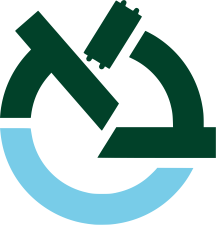

Partners

BioPIM consists of five academic institutions and two companies from four European countries, Turkey, Switzerland, France, and Israel. The partners have complementary expertise within the disciplines of computer science, computer engineering, electrical engineering and genomics allowing an interdisciplinary approach for achieving BioPIM’s goals.
Engagement of partners from different but complementary backgrounds will brighten up breakthrough features of BioPIM and ensure attainment of the strategic objectives of the consortium. Objective 1, which includes optimizing algorithms and data structures for PIM will take guidance from Bilkent, Pasteur, and CNRS. We will use several software tools to profile computational behavior, some of which were developed by ETH Zurich and IBM Research Zürich. Objective 2, which involves hardware/software co-development requires expertise by all participants, where algorithmic aspects will be guided by Bilkent, Pasteur, and CNRS, and hardware development will be guided by ETH Zurich, TECHNION, Bar-Ilan, IBM, and UPMEM. Objective 3, which involves PIM architecture prototyping and API design requires expertise in simulation infrastructures that ETH Zurich, IBM, and UPMEM have, and API development that Pasteur will lead with the participation of Bilkent, ETH Zurich, IBM, Bar-Ilan, and TECHNION.
Project Coordinator

Can Alkan is an Associate Professor in Computer Engineering at Bilkent University. He has over 20 years of experience in algorithm design for bioinformatics and he has contributed to several large-scale genome sequencing efforts such as the 1000 Genomes Project and Genome in a Bottle.
Team members: Gamze Kozanoğlu, Pınar Demirekler Burat, Klea Zambaku, Ecem İlgün, Ömer Yavuz Öztürk, Berkan Şahin, Akmuhammet Ashyralyyev, Zülal Bingöl
Team Leaders

Onur Mutlu is a Professor of Computer Science at ETH Zürich, in the Information Technology and Electrical Engineering department. He is an expert in computer architecture, systems, security, and bioinformatics.
Team members: Mohammad Sadrosadati, Can Firtina, Konstantina Koliogeorgi, Nika Mansouri Ghiasi, Tracy Ewen, Geraldo De Oliveira Junior
Alumni: Juan Gómez Luna, Mohammed Alser, Joël Lindegger, Banu Cavlak, Julien Eudine, Haiyu Mao

Rayan Chikhi is a researcher in bioinformatics and group leader of Sequence Bioinformatics at Institut Pasteur. His interests range from fundamental data structures and algorithms, to their implementation and execution in the context of DNA and RNA sequencing and de novo genome assembly.
Team members: Erwan Drezen, Yoann Dufresne, Yoshihiro Shibuya

Dominique Lavenier is a CNRS Research Director and the GenScale team leader at IRISA/INRIA. His main research interests are bioinformatics, genomics, parallelism, computer design and optimization.
Team members: Meven Mognol, Florestan de Moor
Abu Sebastian is a Distinguished Research Staff Member & Manager at IBM Research Zürich. He was a contributor to several key projects in the space of storage and memory technologies and currently manages the research effort on in-memory computing at IBM Research Zurich.
Team members: İrem Boybat, William Simon, Orhun Görkem, Elena Ferro, Manuel Le Gallo
Alumni: Nikolas Ioannou

Ran Ginosar is a Professor of Electrical Engineering at Technion - Israel Institute of Technology. He is an expert in many-core plural architectures, VLSI, neurochips, and asynchronous logic design.
Alumni: Naomie Abecassis, Robert Hanhan, Zuher Jahshan

Yann Falevoz is Product Manager & Tech Marketing Project Manager at UPMEM.
Team members: Meven Mognol, Renaud Ayrignac
Alumni: Aphélie Moisson-Franckhauser

Leonid Yavits is a Senior Lecturer at Bar-Ilan University. He was formerly the founder of VisionTech and HorizonSemi, and he served as the Engineering Director at Broadcom Israel. Dr. Yavits is an expert in domain and application specific accelerators, especially using associative processors.
Team members: Zuher Jahshan